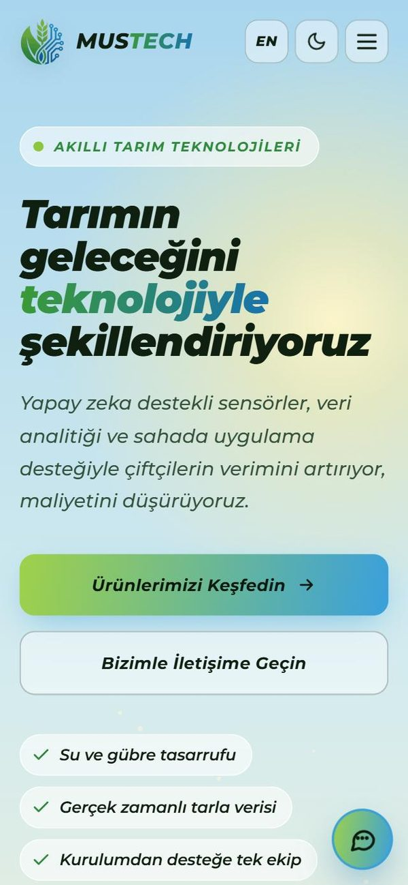
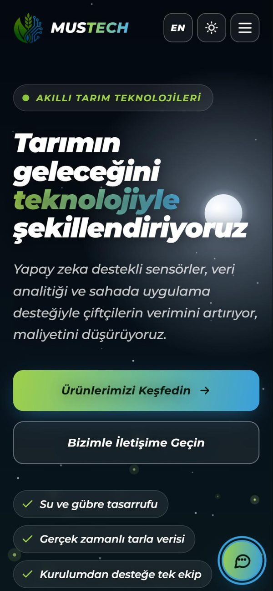
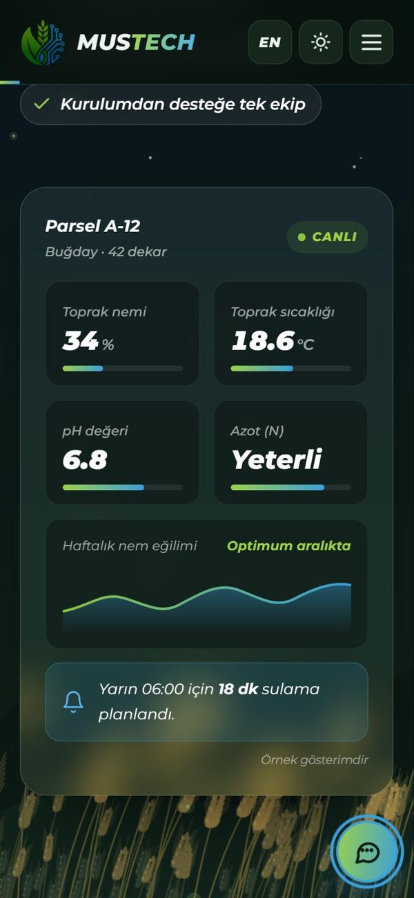
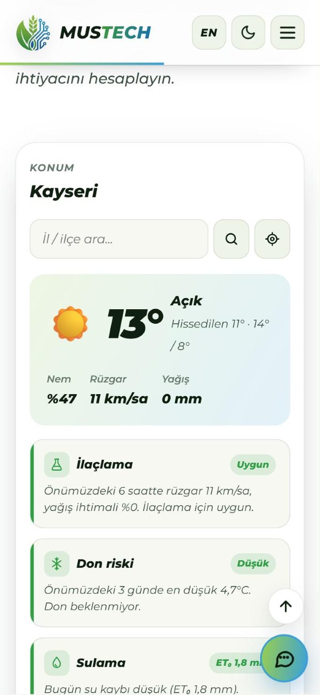
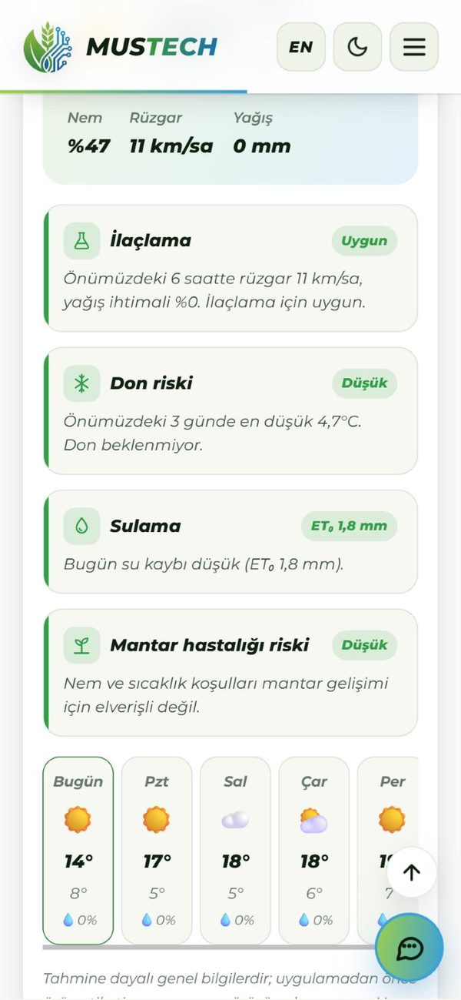
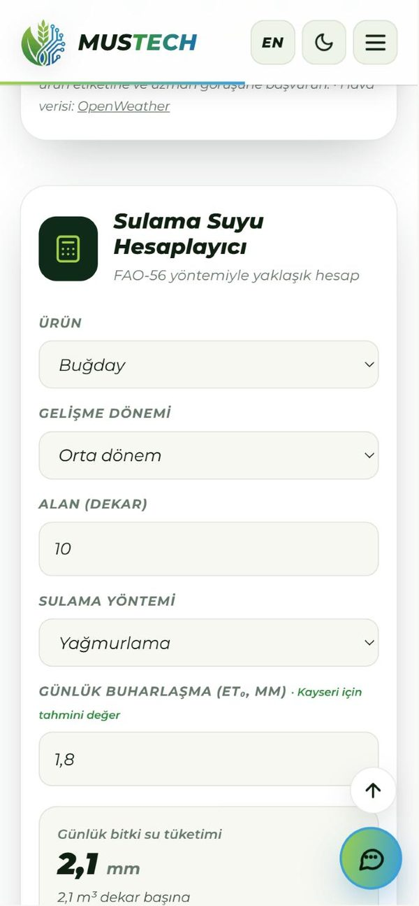
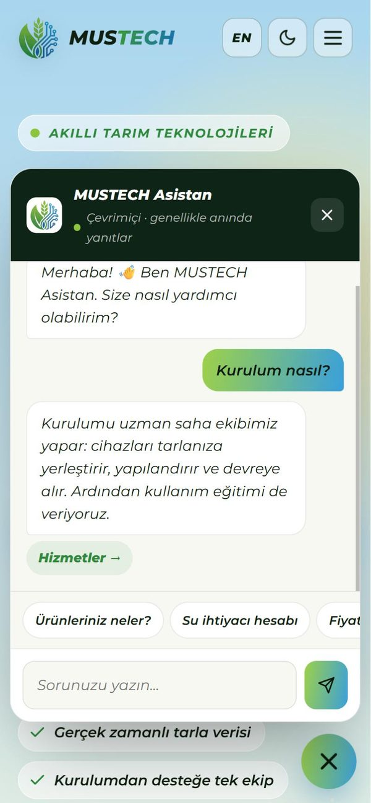

The MUSTECH Agro Website: A Site for a Smart Agriculture Company
While working on embedded systems at MUSTECH, I also built the company's website: mustechagro.com.tr. MUSTECH is a smart agriculture company based in Kayseri, Türkiye; it helps farmers use less water and fertilizer with sensors, software and field support. The site's job is to explain these products in plain language and make it easy for farmers to get in touch.
I built it without a ready-made platform or framework, using plain HTML, CSS and JavaScript, with help from AI tools for design and coding. Most farmers visit from their phones, so I designed every section for a phone screen first.



What is on the site?
It is a single page that reads like a story from top to bottom: an introduction to the company, how it works in four steps (measure, analyze, recommend, apply), six products (smart irrigation, a soil analysis sensor, a frequency-based pest animal repeller, farm management software, a weather station and fertilizer optimization), services, FAQs and contact.
- Turkish / English: the EN button switches the whole page to English, and the choice is remembered.
- Light and dark theme: in the dark theme the field in the background turns to night as well.
- Wheat field animation: wheat swaying in the wind, drawn on a canvas. It pauses when it is off screen or the tab is in the background, so it does not waste the phone's battery or CPU.
- Sample field panel: a demo showing soil moisture, temperature, pH and nitrogen to explain what the products do in the field (clearly labeled as a sample).
Free field tools
To make the site more than a brochure, I added two tools that visitors can actually use.
Weather and farming indicators. The visitor searches for a city or district, or uses "find my location", and the site fetches the forecast from OpenWeather. Four indicators are derived from it: spraying (good / caution / not suitable, from wind and rain probability over the next hours), frost risk (from the lowest temperature in the next three days), irrigation (from daily evapotranspiration ET₀ and expected rain) and fungal disease risk (from humidity and temperature). A five-day forecast sits below.
Irrigation water calculator. An approximate FAO-56 calculation: a crop coefficient (Kc) is picked by crop and growth stage, multiplied by daily evapotranspiration (ETc = Kc × ET₀), and the water need per decare and in total is calculated from the area and the efficiency of the irrigation method.



MUSTECH Assistant

A small assistant opens from the button in the bottom-right corner. It matches questions on about 25 topics (products, installation, quotes, technical support, service regions and more) by keywords and answers from the information on the site, with a button that jumps to the relevant section.
It does not rely on any outside service and runs entirely in the browser, so it is fast and free; adding a new question and answer is one more line in a list.
Contact form
The form sends the message straight to the company's email through FormSubmit, so no server is needed. A hidden trap field (honeypot) stops spam bots. Clicking the info button on a product card fills the form's topic with that product.
Technical details
- No framework: HTML, CSS and JavaScript, with language, animation, tools and the assistant in separate JavaScript files
- Two themes with CSS variables, fluid type with
clamp(), grid layout - Accessibility: a "skip to content" link and animations that respect
prefers-reduced-motion - SEO: Organization and FAQPage structured data, social sharing cards
- Weather data: OpenWeather API · Form: FormSubmit · Served through Cloudflare
See it live
Try the field tools for your own location or ask the assistant a question.